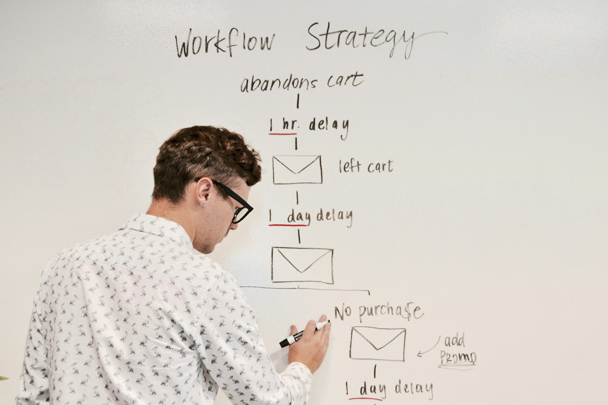

TL;DR
Explore 7 actionable passive income ideas suited for young adults. Successful strategies, like online courses, can yield $3,000 within months. Expect to invest time and effort while avoiding common pitfalls.
Who Can Benefit from Online Passive Income?

If you're a young adult eager to supplement your income without dedicating endless hours to a side hustle, exploring passive income could be your answer.
Ideal candidates include college students balancing studies, recent graduates seeking financial freedom, or young professionals looking for investment opportunities that demand less hands-on work.
Many mistakenly believe passive income just means receiving checks without effort. In reality, it requires initial work and strategy to succeed.
This article is crafted for those ready to take the plunge into accessible, impactful income opportunities while managing their busy lives.
Why Do Most Young Adults Give Up on Passive Income?

Many young adults enter the passive income landscape assuming that results come quickly. However, a common pitfall is the expectation for immediate returns.
For instance, projects like rental property investments or creating an online course may take time to start yielding income—in some cases, up to six months or more.
This delay can lead to frustration and eventual dropout from worthwhile ventures. Moreover, young adults frequently underestimate the effort needed to establish these income streams.
Failing to educate themselves about the complexities involved, they take shortcuts that cost them more in the long run. The misconception of 'easy money' is discouraging; understanding the real path can foster more commitment and success.
The Step-by-Step Blueprint for Creating Passive Income
To build a reliable passive income stream, begin by choosing a strategy that resonates with your skills and interests. Here’s a streamlined workflow to guide you: 1. Identify Your Interest: Choose a niche you're passionate about, whether it's writing, teaching, or investing. 2. Research Your Market: Analyze demand and competitor offerings; tools like Google Trends can help pinpoint popular topics or products. 3. Create a Product/Resource: Whether it's an eBook, an online course, or affiliate blog articles, develop your offering. 4. Launch Your Product: Utilize platforms like Teachable or Amazon to reach your audience efficiently. 5. Market and Automate: Use social media and email marketing campaigns to automate the customer acquisition. 6. Assess and Revise: Analyze what works and what needs improvement, dedicating about three months for optimization.
The total commitment initially may range from 10 to 15 hours weekly for the first few months. This structured approach can yield a consistent income over time.
How I Generated $3,000 in My First 90 Days
Implementing these strategies, I started an online course in digital marketing over a three-month timeline. My initial steps involved organizing content, recording lectures, and designing promotional materials, which took about 40 hours in total.
I invested approximately $200 in platform fees and advertising. The first month had minimal sales, yielding only $200, as I was perfecting my marketing approach.
By the second month, sales rose to $1,200 as I refined my advertising strategy and engaged with students through social media. By the end of the third month, income peaked at $3,000 when I introduced a late-night promotional push via webinars.
This real-world scenario illustrates that initial struggles can lead to substantial rewards over a short period with the right strategy.
Common Pitfalls to Avoid When Generating Passive Income
Mistakes are part of any journey, especially in passive income generation. A significant error is choosing the wrong platform or strategy—say, attempting to create a course on a saturated subject when there's little interest.
Alternatives that might have performed better include niche-specific content, which often garners a more dedicated audience. Tradeoffs exist when deciding whether to prioritize quality or quantity; focusing on overly complex products may delay income without substantial benefits.
Additionally, overlooking the importance of marketing can leave your hard work unnoticed, effectively stalling potential earnings. Lastly, remember that maintaining passive income requires periodic attention; neglecting upkeep can lead to stagnation or decline.
Building the Next Steps for Ongoing Passive Income
After establishing your initial passive income, it's crucial to consider your next steps for expanding your income streams. Strategies include: 1. Diversifying Offerings: If you’ve successfully launched an online course, consider writing an eBook or creating a private coaching group. 2. Referral Programs: Implementing referral or affiliate marketing pathways can enhance your income without added investment. 3. Time-Bound Challenges: Consider running short-term promotions or challenges to boost engagement and sales within a limited timeframe.
Aiming for additional offerings could take around three to six months to implement, depending on your pace of work. The key takeaway here is that early momentum enables more expansive earnings, and being proactive in strategy adjustments can solidify your passive income for the long term.
FAQ
What are the best passive income sources for young adults?
The best sources include online courses, dropshipping, affiliate marketing, and print-on-demand services.
How much initial work is needed for passive income?
Initial work may vary, but expect to commit around 10-15 hours weekly for the first few months to set up your income stream.
Are there risks involved with passive income streams?
Yes, common risks include selecting saturated niches and overextending marketing budgets without a clear strategy.
Can passive income become unreliable over time?
Yes, periodic effort is required to update your offerings and maintain audience interest, making some sources less predictable.
How long does it generally take to see returns?
Typically, expect at least three to six months before substantial returns become evident.
This article is reviewed for practical usefulness and updated when information changes.
Next step
Use the article as a decision point, not just reading material. Your next system matters more than more browsing.
Search more articles
Find related tools, workflows, and guides.
Photo credits
- Photo 1: Campaign Creators via Unsplash
- Photo 2: Campaign Creators via Unsplash
- Photo 3: Compagnons via Unsplash
- Photo 4: Christian Brok via Unsplash
- Photo 5: Moe Magners via Pexels